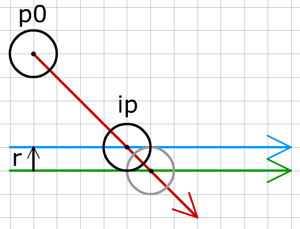

- Using vectors
- 4) Move, Accelerate
- 5) Intersection
- 6) Bounce
- The ball
- 7) Ball vs Line
- 8) Ball in the Corner
- 9) Ball vs Ball
- 10) Ball vs Moving Ball
- 11) Moving balls
- 12) Ball vs Arc
- Extras
- Downloads

7) Ball vs Line
공 vs 선 (Ball vs line)
지금까지 단 하나의 움직이는 점만 사용해서 아마 지루했을 것 같습니다. 움직이는 점에 문제가 있는 것은 아니고, 점은 완전하지만, 점은 점일 뿐입니다. 현실에서 얼마나 많이 움직이는 점들을 볼 수 있나요? 많이 없을 것입니다. 결론적으로, 우리는 큰 걸음 앞으로 나아가 좀더 현실적인 - 공 같은 것을 움직이고자 합니다.^^;
공은 너비를 갖습니다. 앞으로 예제에서 공은 원으로 표현되고 그것의 중앙에 좌표를 갖고, 반경 또한 갖습니다.
ball = {r:10};
ball.p0 = {x:150, y:100};여기 움직이는 공은 반경이 10입니다. 이제 그 공의 중심 좌표, 운동 벡터, 반경을 알고, 어느 지점에서 벽에 충돌할 지 알기 원합니다.

그림에서 공의 중심점과 벽의 교차점은 회색 원이 있는 곳일 것입니다. 실제 공은 이전에 벽에 부딪힙니다. 벽에 부딪히는 실제 공의 위치는 공의 반경만큼 벽의 노말 방향으로 벽 벡터(초록)를 이동시킨 벡터(파랑)와 공의 운동벡터(빨강)의 교차점입니다. 그래서, 벽 벡터로 교차점을 찾는 대신에 방향은 같고 시작점이 옮겨진 다른 벽 벡터를 사용해야 할 것입니다.
축 방법 (Axes method)
선과 공의 교차점은 다른 방법으로도 구해질 수 있습니다. 좀더 간단하게 투영을 이용해 어떻게 공이 벽에 부딪히는지 판단하는지 보도록 합시다.

그림에서 벽의 시작점(v2.p0)에서 공의 중심점까지 벡터(파랑)을 그립니다. 이제 이 새로운 벡터를 벽의 노말에 투영하여 벡터 v3(빨강)를 구합니다. 공을 벽 근처에 두기 위해서 다음 크기만큼 벽의 노말 방향으로 움직여야 합니다.
ball.r - v3.length예제 코드에서 벽의 노말은 단위 벡터이여야 할 것입니다:
v.lx = v.dy;
v.ly = -v.dx;runMe 함수에서 모든 벽 벡터에 대한 검사를 수행합니다 :
for(int i=0; i<4; i++) {
float pen = ball.r - findAxesHeight(ball, vectors[i]);
//if we have hit the wall
if(pen >= 0) {
//move object away from the wall
ball.p1.x += vectors[i].lx * pen; //unit-sized lx
ball.p1.y += vectors[i].ly * pen; //unit-sized ly
//change movement
Vector vb = bouncingBall(ball, vectors[i]);
ball.vx = vb.vx;
ball.vy = vb.vy;
}
}위 코드에서는 w.lx, w.ly가 단위벡터의 속성 크기이기 때문에 pen 값을 곱했다.
각각 벽을 통과하는 양을 찾아내고, 만약 공이 벽 안에 있다면 공을 떨어뜨려 놓습니다. 그리고 bouncingBall 함수를 사용해 새로운 운동 벡터를 구합니다.
벽에서부터 공의 중심까지 길이를 구하는 함수 :
float findAxesHeight(Vector v0, Vector v1) {
//vector between center of ball to ending point of wall
Vector v3 = new Vector();
v3.vx = v0.p1.x - v1.p0.x;
v3.vy = v0.p1.y - v1.p0.y;
//project this vector on the unit-sized normal of the wall
Vector v = projectVector(v3, v1.lx, v1.ly);
//find length of projection
v.length = sqrt(v.vx*v.vx + v.vy*v.vy);
return v.length;
}다음 예제에서 벽의 점들 중 끝 점을 드래그 해보십시요 :
(소스파일 pde를 다운받을 수 있습니다.)
이 예제는 벽의 길이를 다루지 않고 있으며, 벽의 벡터 방향이 이전 단계의 예제와 다름을 유념하세요. 모든 벽들은 끝없이 이어져 있는 것으로 간주합니다. 그렇기 때문에, 이 예제는 박스 안에 공을 붙잡아 두는 데 사용할 수 있지만, 박스 밖에 잡아두지는 못합니다.
다음 단계에서는 코너에서 공이 어떻게 충돌을 하는지 보도록 할 것입니다.
다음 : Ball in the corner